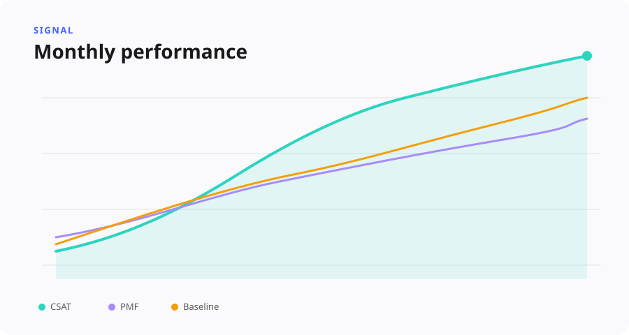
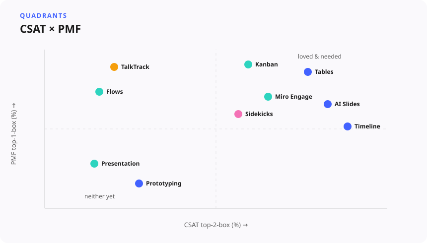
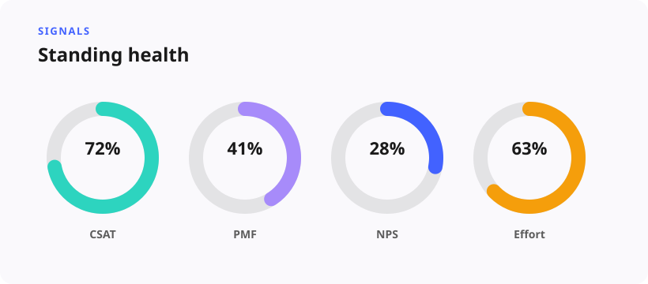

Always-on Signals
Hundreds of thousands of CSAT & PMF responses
A standing CSAT × PMF measurement system that replaced company dashboards and absorbed hundreds of thousands of responses across product lines.

Situation
Miro's key AI features (such as Sidekicks and Flows) were iterating rapidly, making traditional research sprints and static retrospectives obsolete. Experience quality data was fragmented across isolated in-product surveys, Slack channels, reports and decks. Leadership needed a continuous, real-time pulse on customer sentiment, so I decided to create a program to track satisfaction (CSAT) and product-market fit (PMF) directly linked to commercial impact and feature usage.
Task
Build and operationalize Always-on Signals — a standing, automated health measurement system. The primary goal was to triangulate live survey, usage, and revenue data from Snowflake into decision-ready views, replacing ad-hoc pulls with a system product teams would actively use.
Approach
Data was triangulated through automated pipelines from Snowflake, combining four core signals: sentiment (CSAT, PMF, overall NPS), value (ARR-weighted satisfaction by plan tier), engagement (active user tiers), and adoption/retention metrics. A joint-attitude framework mapped overlapping CSAT and PMF respondents into four distinct profile quadrants — AI Champions, Happy but Indifferent, Frustrated but Hooked, and Disappointed and Detached — to separate dependence from happiness.
Multiple linear regression was applied to coded open-text comments, isolating specific drivers and assigning a “CSAT uplift if solved” value to rank product fixes by business impact. The research itself was productized: continuous HTML dashboards and a dedicated web page, alongside human-curated weekly and bi-weekly updates to Slack — treating research as a living product with its own release cadence.

Result
The program earned high-scale operational adoption: it replaced traditional company dashboards and scaled to cover additional product lines, absorbing hundreds of thousands of CSAT, PMF, and relationship NPS responses across multiple product portfolios. It surfaced a critical strategic discovery — significant CSAT drops in specific key AI feature areas even while overall company sentiment looked stable — exposing enterprise revenue risk tied to low-satisfaction accounts. It also created a data-quality feedback loop, surfacing underlying instrumentation issues (like tag bleed between products) that fed directly into engineering fixes.

Methodology
Always-on Signals demonstrates construct definition in the wild, combining attitudinal metrics (CSAT/PMF/NPS) with behavioral telemetry (board creation, sharing, seven-day retention). Pairing linear regression with user-segment cuts (tenure, plan, role) extracts actionable statistical impact while preserving observational rigor — turning mixed-methods research into a core operational deliverable.
Skills demonstrated: Regression & effect sizes, Qualitative synthesis (diary studies, interviews), Research-ops & infrastructure, Stakeholder communication